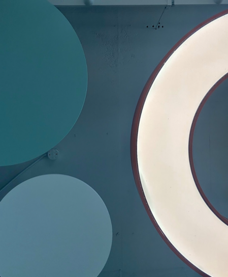
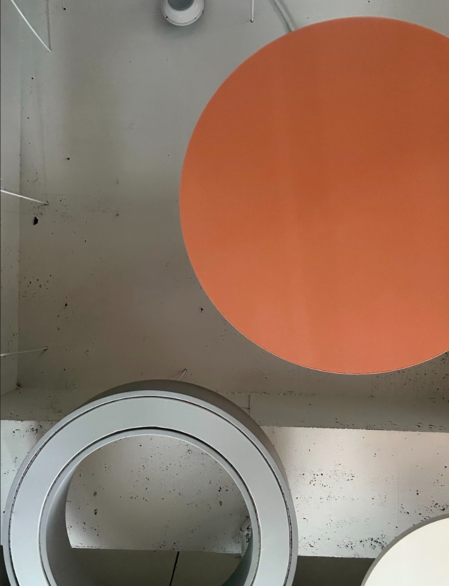
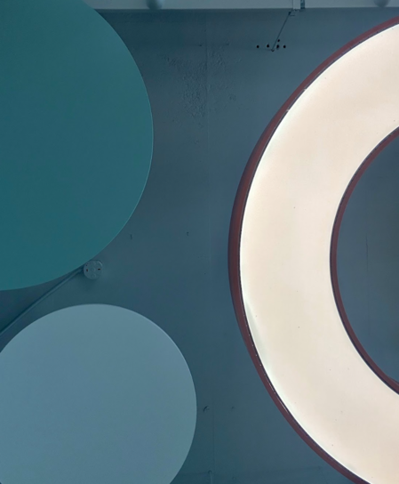
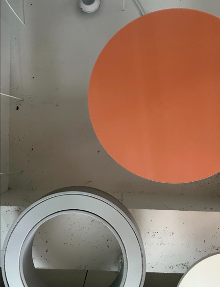
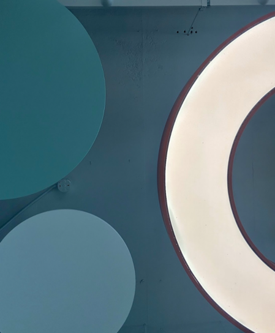
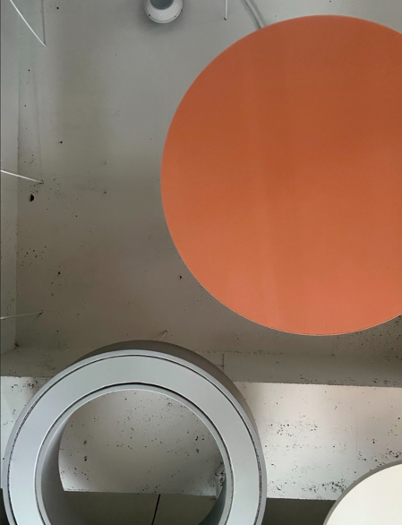

1. 점(Point)
점은 시각적 표현에서 가장 작은 단위로 차원이 없고 위치 만을 가진 기본 개념이라고 정의할 수 있습니다.
하지만 표현 방법에 따라 점은 크기, 모양, 색상 및 질감을 다양하게 할 수 있으며,
배열 및 다른 요소와의 관계를 이용해 구성에 큰 영향력을 미칠 수 있습니다.
또, 점은 작가의 의도에 따라 보는 사람의 시선을 유도하는 초점 역할을 할 수도 있고
화면에서 균형을 잡거나 리듬감, 움직임을 줄 수도 있습니다.
연속된 점은 선, 모양 및 패턴을 형성하며, 규칙적 혹은 불규칙적 배열을 통해 보는 사람에게 다양한 시각적 경험을 할 수 있게 해줍니다.

